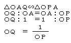
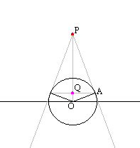

1/f(x) Generator
Introduction
In the right, the device Generates function 1/f(x) from f(x).
The theory is the following.
The radius of the circle = 1.


Applet
Drag the red point to move the point on the function f(x) and observe the point Q.
Check the radio button to change the function f(x) and observe 1/f(x).